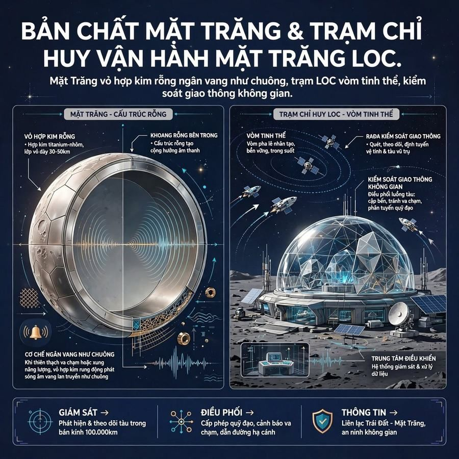
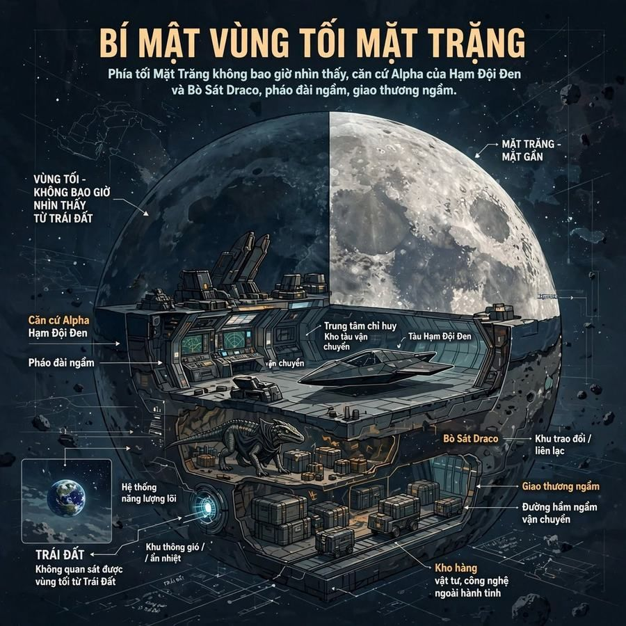
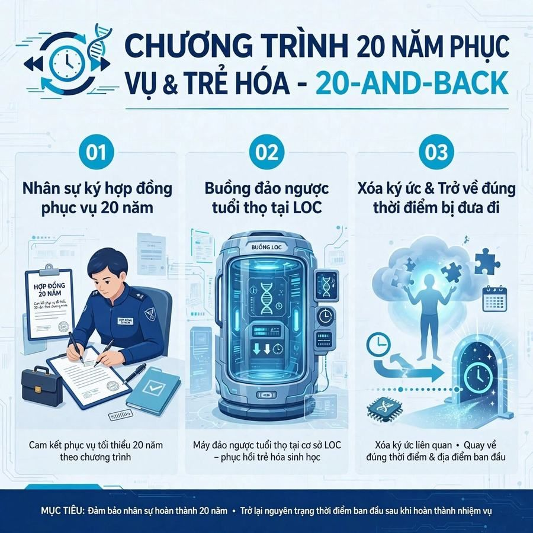
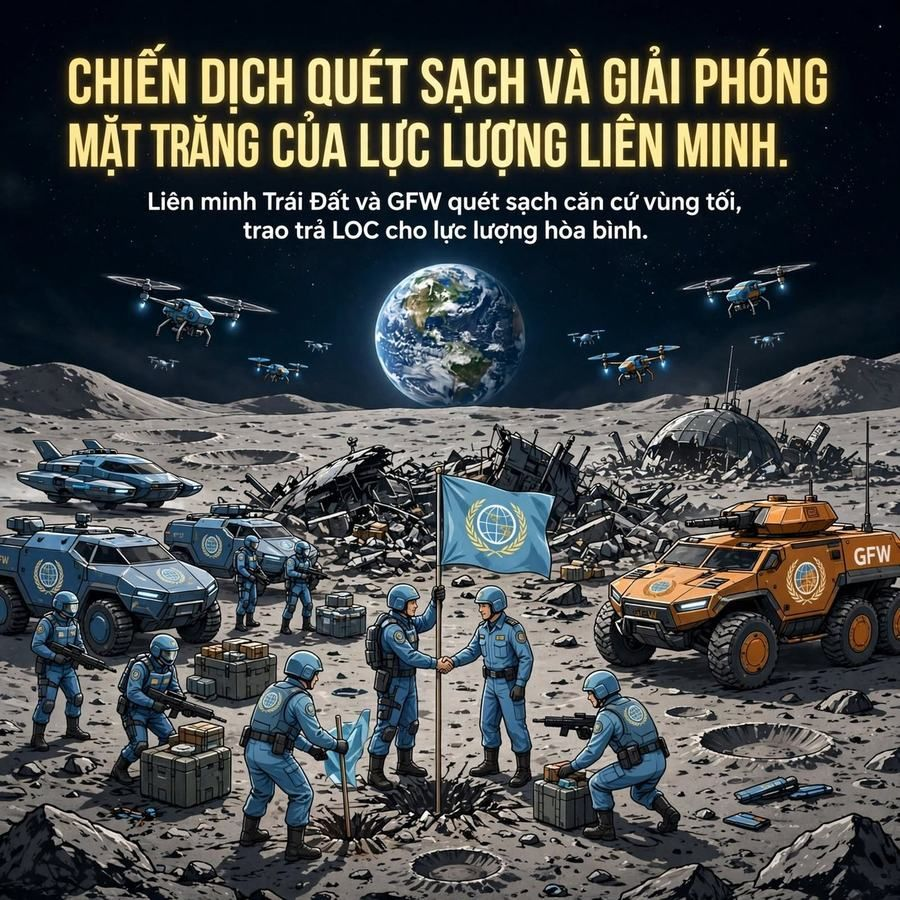
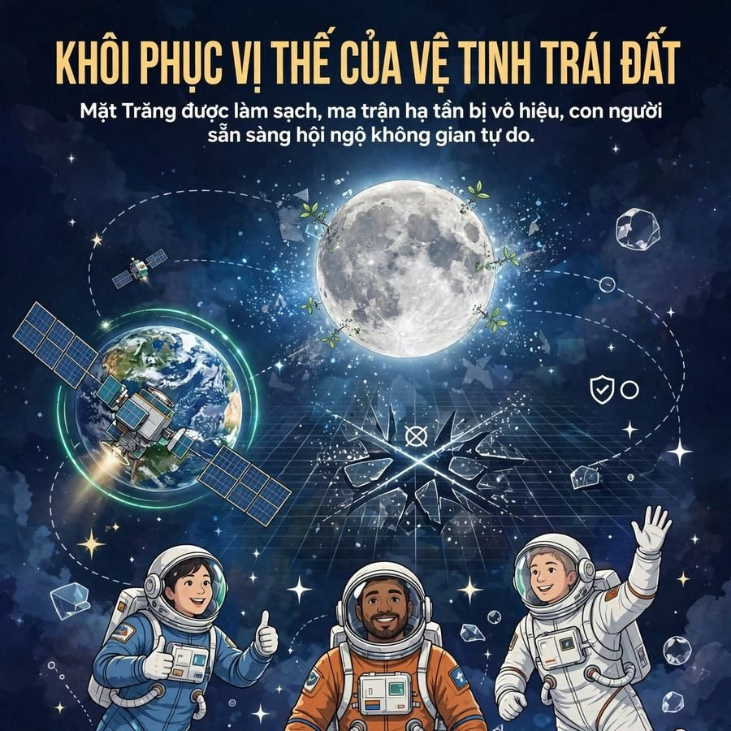

Trang chủ / Chuyên đề 5: Chương Trình Không Gian Bí Mật / Kỳ 44
Chuyên đề 5 · Kỳ 44 / 80
TRẠM CHỈ HUY VẬN HÀNH MẶT TRĂNG (LOC) & BÍ MẬT CÁC CĂN CỨ NGẦM BÊN TRONG MẶT TRĂNG

Ở Kỳ 3, chúng ta đã cùng nhau vạch trần bộ mặt công nghiệp tàn khốc của Liên Minh Các Tập Đoàn Không Gian Tư Nhân (ICC), mạng lưới thuộc địa ngầm trên Sao Hỏa và thảm kịch nô dịch lao động ngoài vũ trụ. Hôm nay, chuyến du hành giải mã các chương trình không gian bí mật sẽ đưa chúng ta quay trở về với thiên thể gần Trái Đất nhất — Mặt Trăng. Trong nhận thức khoa học công cộng, Mặt Trăng chỉ là một hòn đá vắng bóng sự sống quay quanh Trái Đất. Nhưng sự thật được giải mật từ các nhân chứng SSP lại mở ra một thực tại hoàn toàn kinh ngạc: Mặt Trăng là một vệ tinh nhân tạo lòng rỗng cổ đại, cất giữ hàng loạt căn cứ quân sự siêu hiện đại, trong đó nổi tiếng nhất là Trạm Chỉ Huy Vận Hành Mặt Trăng (Lunar Operations Command — LOC)! Trạm LOC được xây dựng như thế nào và đóng vai trò trạm trung chuyển giao thông không gian ra sao? Bí mật về các căn cứ ngầm của Hạm Đội Đen và phe Bò sát ở "Phía tối của Mặt Trăng" (The Dark Side of the Moon) bị che giấu ra sao? Chương trình "20 năm phục vụ và trẻ hóa" (20-and-Back) được điều phối tại LOC như thế nào? Và chiến dịch giải phóng Mặt Trăng của Liên minh Trái Đất phối hợp với Liên Đoàn Thiên Hà đang mang lại kết quả bừng tỉnh ra sao?
1. BẢN CHẤT MẶT TRĂNG & TRẠM CHỈ HUY VẬN HÀNH MẶT TRĂNG (LOC)
Khác với những giả thuyết thông thường, Mặt Trăng không phải là một mảnh vỡ tự nhiên của Trái Đất, mà là một đại chiến hạm tinh thể lòng rỗng cổ đại được đưa về quỹ đạo Trái Đất từ hàng triệu năm trước. A. Cấu Trúc Lòng Rỗng & Vỏ Hợp Kim Cổ Đại
- Thiên Thể Rỗng Lòng: Mặt Trăng sở hữu lớp vỏ hợp kim metallic-titanium cực kỳ kiên cố dưới lớp bụi đá bên ngoài. Khi các tàu vũ trụ va chạm vào bề mặt Mặt Trăng, từ trường và sóng địa chấn ghi nhận hiện tượng "ngân vang như một quả chuông rỗng" suốt nhiều giờ. B. Trạm Chỉ Huy Vận Hành Mặt Trăng (LOC — Lunar Operations Command)
- Trung Tâm Giao Thoa Của Các Chương Trình SSP: LOC được xây dựng ngầm bên trong một miệng núi lửa cổ đại ở phía mặt nhìn thấy của Mặt Trăng. Kiến trúc LOC gồm cấu trúc vòm tinh thể nhiều tầng đâm sâu vào lòng đất.
- Trạm Kiểm Soát Không LƯU & Quản Lý Nhân Sự: LOC đóng vai trò là trạm trung chuyển giao thông không gian chính, nơi kiểm soát các chuyến bay ra vào Hệ Mặt Trời, trung tâm tiếp đón, kiểm tra y tế và phân loại nhân sự trước khi gửi họ đến Sao Hỏa, Ceres hay các căn cứ không gian sâu.

2. BÍ MẬT VÙNG TỐI MẶT TRĂNG (THE DARK SIDE OF THE MOON)
Do hiện tượng khóa thủy triều, Mặt Trăng luôn quay một mặt duy nhất về phía Trái Đất. Phía mặt xa (Dark Side of the Moon) — nơi con người bề mặt không bao giờ nhìn thấy bằng mắt thường — là nơi tập trung các đại căn cứ ngầm sầm uất nhất. A. Căn Cứ Alpha Của Hạm Đội Đen & Phe Bò Sát Draco
- Lãnh Thổ Nghiêm Ngặt Của Các Thế Lực Bóng Tối: Ở vùng phía sau Mặt Trăng, Hạm Đội Đen cùng phe Bò sát Ciakahrr và người Xám tiêu cực đã xây dựng các pháo đài ngầm khổng lồ (như Căn cứ Alpha).
- Trung Tâm Giao Thương & Thu Hoạch Năng Lượng: Nơi đây từng diễn ra các hoạt động giao thương công nghệ ngầm, điều phối hạm đội chiến hạm chóp nón và vận hành các trạm phát sóng hạ tần hướng về Trái Đất để duy trì ma trận kiểm soát nhận thức. B. Ranh Giới Lãnh Thổ & Thỏa Thuận Ngầm
- Sự Phân Chia Khu Vực Bất Xâm Phạm: Mặt Trăng được chia thành nhiều phân khu lãnh thổ giữa hàng chục chủng tộc ngoài hành tinh và các phe phái SSP khác nhau. Mỗi phe đều tuân thủ ranh giới an ninh nghiêm ngặt để tránh bùng nổ xung đột trực tiếp tại vệ tinh này.

3. CHƯƠNG TRÌNH "20 NĂM PHỤC VỤ & TRẺ HÓA" (20-AND-BACK PROGRAM)
Trạm LOC là nơi khởi đầu và kết thúc của một trong những chương trình không gian bí mật kỳ lạ nhất đối với nhân sự tuyển dụng từ Trái Đất. A. Quy Trình Tuyển Dụng & Phục Vụ 20 Năm
- Ký Hợp Đồng Phục Vụ Không Gian: Các nhân sự tài năng hoặc quân nhân được tuyển chọn (nhiều người bị đưa đi trong vô thức) sẽ được đưa đến LOC để làm thủ tục tiếp nhận, sau đó được phân công làm việc 20 năm tại các thuộc địa Sao Hỏa, trạm không gian Solar Warden hoặc Hạm Đội Đen. B. Công Nghệ Đảo Ngược Tuổi Thọ & Xóa Ký Ức (Age Regression & Mind Wipe)
- Trở Về Trạng Thái 20 Năm Trước: Sau khi hoàn thành 20 năm nghĩa vụ, nhân sự được đưa quay trở lại trạm y tế tại LOC. Tại đây, họ được đưa vào các buồng công nghệ sinh học lượng tử đặc biệt để đảo ngược sinh học 20 tuổi, đưa cơ thể về đúng độ tuổi và trạng thái thể xác lúc mới đi.
- Đưa Trở Lại Dòng Thời Gian Trái Đất: Sau khi được xóa ký ức (Mind Wipe), họ được đưa trở lại Trái Đất đúng vào thời điểm vài phút sau khi họ bị đưa đi năm xưa! Tuy nhiên, nhiều nhân chứng sau này đã dần bộc phát lại ký ức (Memory Retrieval) và đứng ra giải mật toàn bộ chương trình này.

4. CHIẾN DỊCH QUÉT SẠCH VÀ GIẢI PHÓNG MẶT TRĂNG CỦA LỰC LƯỢNG LIÊN MINH
Thực tại thao túng từ phía sau Mặt Trăng đã bị đánh sụp hoàn toàn trong những năm gần đây. A. Tổng Tấn Công Giải Phóng Vùng Tối Mặt Trăng
- Sự Phối Hợp Giữa Liên Minh Trái Đất & GFW: Lực lượng Liên minh Trái Đất phối hợp với Hạm đội Solar Warden và Liên Đoàn Thế Giới Thiên Hà đã phát động chiến dịch quân sự quy mô lớn, quét sạch các căn cứ tiêu cực của Hạm Đội Đen và phe Bò sát ở vùng tối Mặt Trăng. B. Trao Trả Trạm LOC Cho Lực Lượng Hòa Bình
- Chuyển Giao Quyền Quản Lý: Trạm Chỉ Huy Vận Hành Mặt Trăng (LOC) đã được giải phóng khỏi sự thao túng của các tập đoàn bóng tối. Hiện nay, LOC được đặt dưới sự quản lý của Liên minh Trái Đất hòa bình và Liên Đoàn Thiên Hà, chuẩn bị chuyển đổi thành trạm trung chuyển đón chào nhân loại bề mặt bước vào Kỷ nguyên du hành vũ trụ công khai!

5. LỜI KẾT KỲ 4: KHÔI PHÚC VỊ THẾ CỦA VỆ TINH TRÁI ĐẤT
Kỳ 4 của chuyên đề 5 khép lại mang đến cái nhìn giải phóng về Mặt Trăng:
- Mặt Trăng Không Còn Là Căn Cứ Bóng Tối: Vệ tinh gần nhất của chúng ta đang được làm sạch hoàn toàn. Ma trận phát sóng hạ tần thao túng tâm trí từ Mặt Trăng đã bị vô hiệu hóa!
- Sẵn Sàng Cho Cuộc Hội Ngộ Không Gian: Sự giải phóng trạm LOC và Mặt Trăng là bước đệm lịch sử, chuẩn bị cho ngày con người Trái Đất chính thức đặt chân lên các trạm không gian với vị thế của một dân tộc tự do và chủ quyền!
